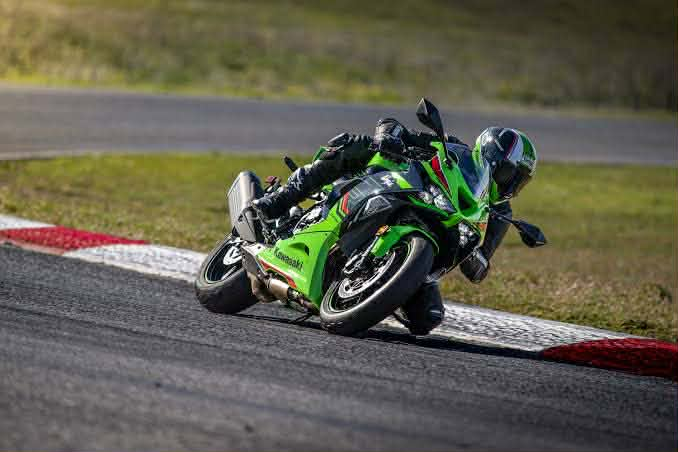
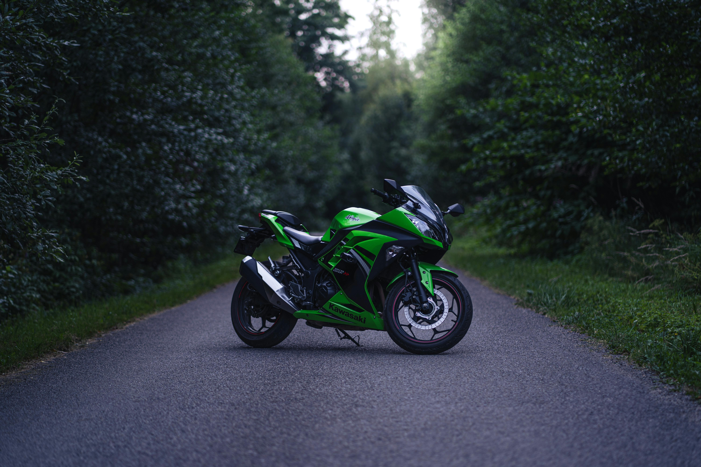
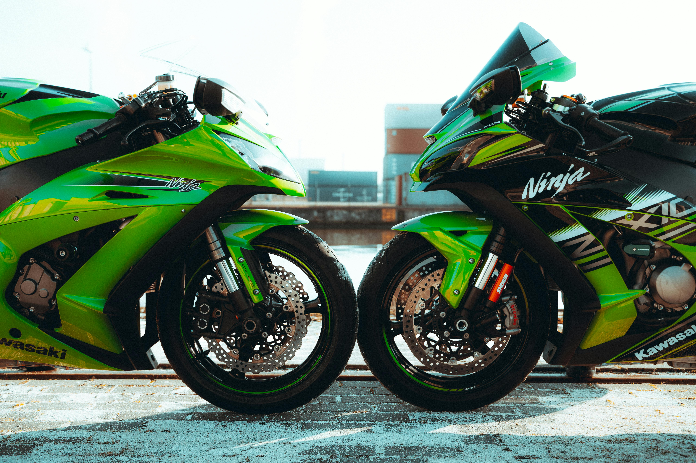
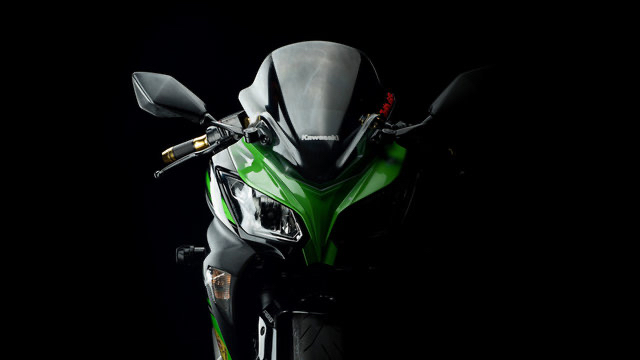

.jpg)
Our Story
Kawasaki is a multi-national corporation with more than fifty holdings (manufacturing plants, distribution centres, and marketing and sales headquarters) in most major cities around the world. Business interests include environmental control and energy plant engineering, machinery and robotics, ship building and marine engineering, power plant engineering and steel structures, rolling stock, aerospace, and of course, ATVs, motorcycles, Side x Side vehicles and personal watercraft. Like all companies, Kawasaki began with a dream and grew into the great corporation it is today.
.jpg)
1878 - The Beginning
In 1878 Shozo Kawasaki, the founder, opened a shipyard to build ocean-going steel ships. In 1896, Kawasaki Dockyard was incorporated and Kojiro Matsukata was appointed first president of the company. Fabrication of locomotives, freight cars, passenger carriages and bridge girders began in 1906 at the newly opened Hyogo Works, and in the following year, production of marine steam turbines began at the dockyard.
.jpg)
1918 - Aircraft Department
During 1918, the Aircraft Department was established at the Hyogo Works only 15 years after the Wright brothers' virgin flight. The department began manufacturing aircraft at a time when airplanes, which could only remain airborne for a few hours, were still made from cloth and wood. Soon after, a plant to manufacture airplanes was built, and Japan's first aircraft made from metal was completed at this plant.
.jpg)
Expansion Era
The following year saw the beginning of many changes as The Marine Freight Department was split off to form Kawasaki Kisen Kaisha Ltd. (K-Line). In 1928, the Hyogo Works was split off to become Kawasaki Rolling Stock Manufacturing Co., Ltd. The Aircraft Department became Kawasaki Aircraft Co., Ltd. in 1937, and in 1950, the Steel Making Department became Kawasaki Steel Corporation. The Rolling Stock, Aircraft, Marine Freight and Steel Making departments became companies in their own right, establishing a firm foundation in their respective fields.
.jpg)
1961 - First Motorcycle
In 1961, the first Kawasaki brand motorcycle was produced by Kawasaki Aircraft Co., Ltd. Then in 1969, Kawasaki Dockyard, Kawasaki Rolling Stock Manufacturing and Kawasaki Aircraft merged into one giant corporation, Kawasaki Heavy Industries, Ltd., to better compete in the emerging and very competitive global market.

Transportation Systems
Kawasaki Heavy Industries, Ltd. (KHI) is engaged in building transportation systems for the 21st century, and in doing so, is utilizing the wealth of technological know-how it has accumulated over the past 120 years. The ship building division has led the world in producing ever larger, ever faster, increasingly automated ships. It is constantly striving to find ways to increase ship manufacturing and navigation efficiency while conserving energy. So far, the quest has resulted in the development of Liquid Natural Gas (LNG) carriers, high-speed ships and other future-oriented marine technologies.
By applying aviation principles, a Jetfoil that speeds above the water at an amazing 45 knots is one project that has become reality. Kawasaki led Japan's shipbuilding consortium formed to build the Techno-Superliner. This exciting new vessel is planned to carry a payload of approximately 1,000 tons and travel at a cruising speed of 50 knots.

Rolling Stock
Kawasaki is supplying rolling stock for the world-famous Shinkansen bullet train as well as other trains. Kawasaki's expertise extends well beyond simply the development and manufacture of rolling stock. As a systems integrator, Kawasaki engineers total railway transportation systems, from train operation control to rolling stock inspection and repair operations.

In The Aircraft Sector
Kawasaki is engaged in a broad range of activities as a manufacturer of both aircraft bodies and engines. At present, the company is manufacturing the BK117 multi-purpose helicopter that was jointly developed by Kawasaki and Messserschmitt-Bölkow-Blohm of Germany (currently Airbus) and portions of the latest passenger aircraft, the Boeing 777 and 787 series. Kawasaki is also an important player in the project to develop the Supersonic Transport (SST), a plane that will travel at altitudes of 60,000 to 90,000 feet at a speed of Mach 2.5 and will carry from 200 to 300 passengers. Kawasaki's high-speed transportation technologies also extend beyond the atmosphere of earth in the new quest to utilize space and its resources.

Civil Engineering
Kawasaki's civil engineering and construction machinery is contributing to the creation of new towns with its bridges and high-rise buildings. The success of the Eurotunnel, the large-scale project that links England to France, owes much to the two tunnel boring machines made by Kawasaki. The company also built the shield machines — the world's largest, at more than 46 feet in diameter — for the construction of the Trans-Tokyo Bay Highway.
.jpg)
Environmental Consciousness
Kawasaki is doing its utmost to fulfill its responsibilities to the planet by being environmentally conscious. It is making every effort to develop environment-friendly plants, technologies to protect the earth, new sources of energy that will help ensure a stable supply of resources and energy, and energy-conserving and recycling technologies.
The Combined Cycle Power Plant (CCPP), for example, uses low-polluting natural gas to turn the turbines that generate power, while exhaust heat is used to generate additional electricity. Kawasaki's resource recycling system uses heat from city refuse incinerators to power coolers and heaters and to heat water; it also collects reusable resources from various types of refuse. Other technologies, including water treatment, flue gas desulfurization and denitration plants, are also proving highly effective in the protection of the environment and the conservation of energy. Kawasaki is always monitoring future technologies and is well positioned to enter the era of fusion energy that will follow.
.jpg)
The Kawasaki Name
The Kawasaki name represents a technological enterprise whose activities range from large-scale, international projects to items used in daily life and for recreation. And at every step, Kawasaki pays the utmost attention to humankind and the environment. The past 120 years of innovation has enabled Kawasaki to establish a firm foundation as a leading technological enterprise. Now, the company is fully prepared to welcome the new century and looks forward to playing a leading role in the advancement of humankind and to another century of innovation.